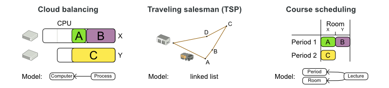
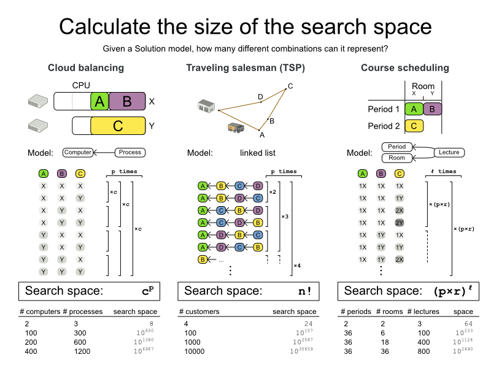
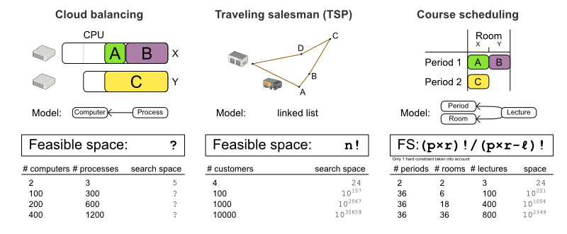
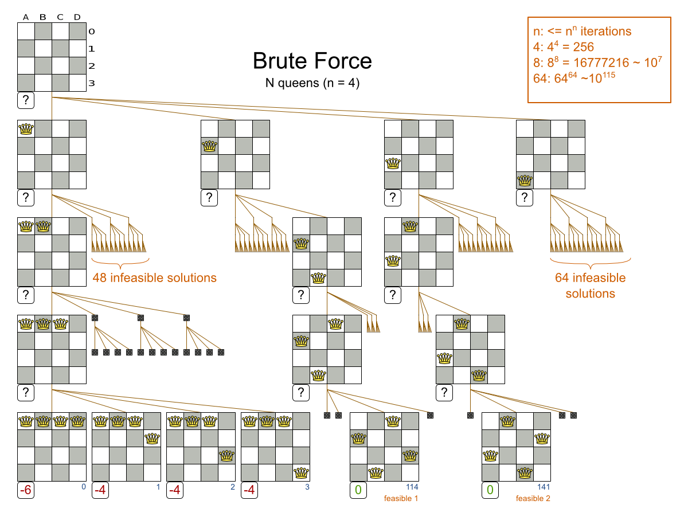
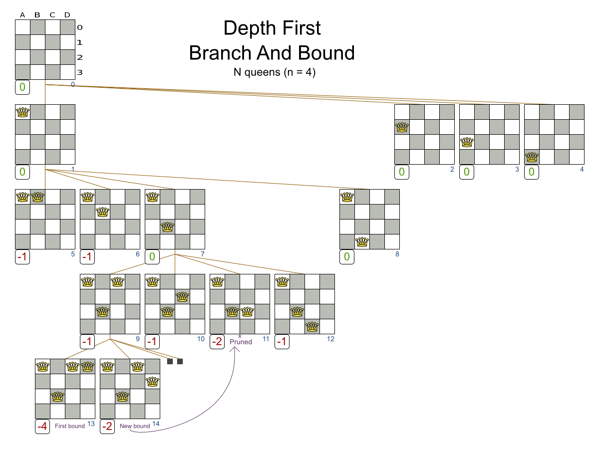
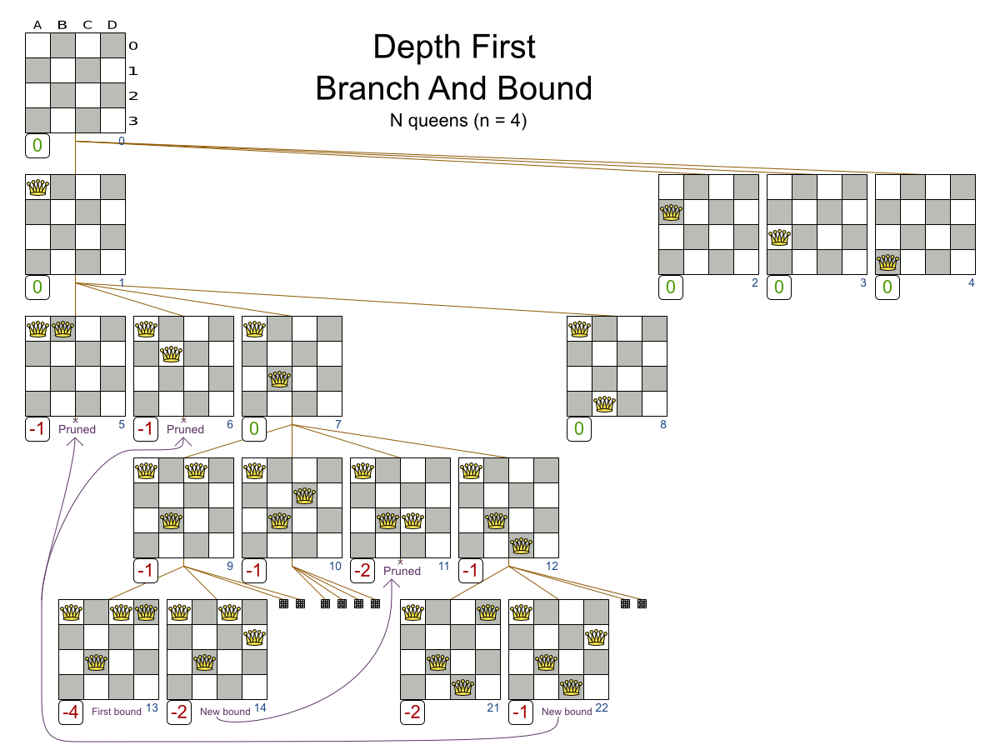
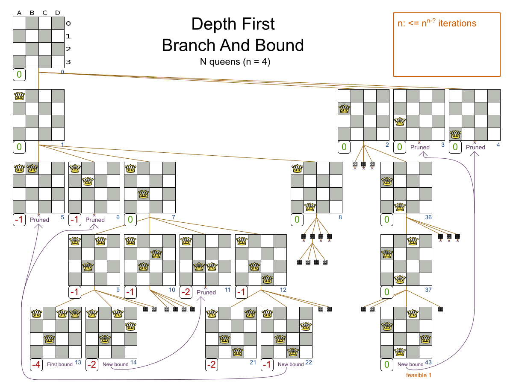
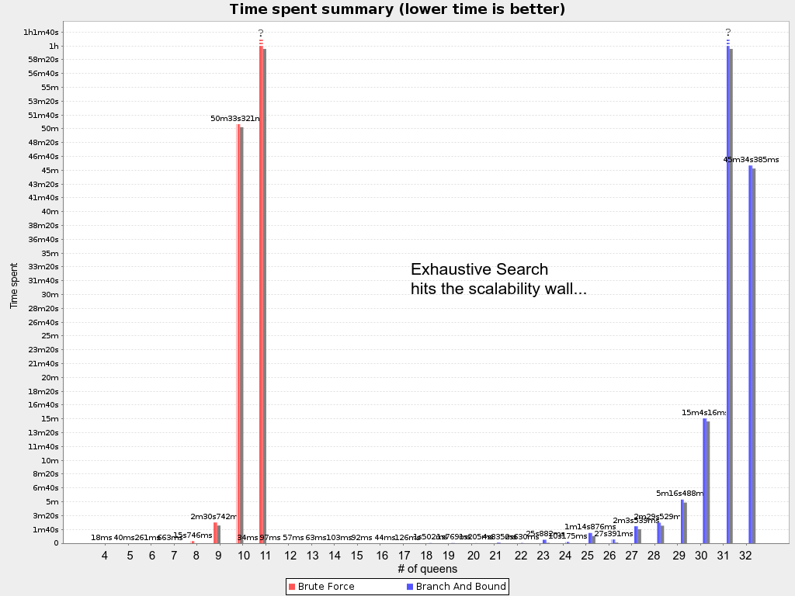
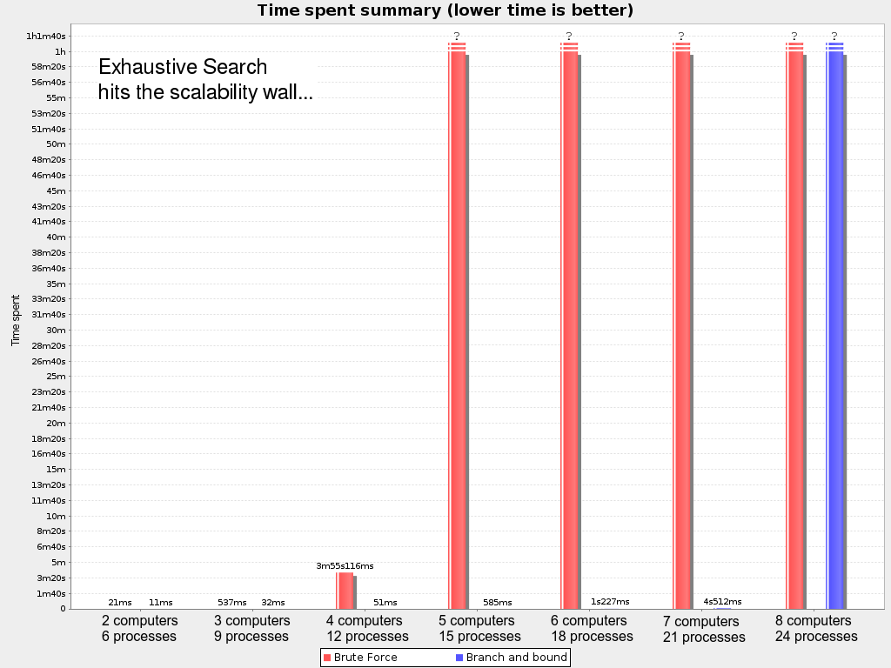

Is the search space of an optimization problem really that big?
Given an planning or optimization problem, how big is the search space?
Can we hope to enumerate every possible solution, looking for the optimal solution?
Let’s calculate the search space of a few use cases.
Use cases

We ‘ll look at these 3 use cases:
Cloud Balancing: Assign processes to computers.
Each computer should have enough hardware capacity (CPU power, RAM, etc) for all its processes.
Use as few computers as possible to minimize the maintenance costs.Model: The class
Processhas a planning variablecomputerof type classComputer.
So everyProcessinstance refers to theComputerinstance to which it’s assigned.
Traveling Salesman Problem (TSP): Find the shortest path to visit every city.
Model: The class
Visithas a planning variablepreviousVisit.
AllVisitinstances together form a single linked list.
Course Scheduling: Assign lectures to periods and rooms.
No teacher should have 2 lectures in the same period.
No room should have 2 lectures in the same period.
There are 6 more constraint types.Model: The class
Lecturehas a planning variableperiodand a planning variableroom.
What’s the search space for each of these use cases?
Base search space
Let’s first look at the number of combinations that each Solution model is able to represent,
regardless if those Solutions are feasible or infeasible (= have broken hard constraints).
Let’s call this the base search space.

Cloud Balancing: The base search space is the number of computers raised to the power of the number of processes.
Traveling Salesman Problem (TSP): The base search space is the factorial of the number of cities (= visits).
Course Scheduling: The base search space is the multiplication of the number of periods and rooms,
raised to the power of the number of lectures.
The base search space is beyond gigantic.
Let’s compare it to the minimal number of atoms in the known universe, which is 1080.
In Cloud Balancing, the base search space is already bigger than that,
for a small dataset of 100 computers and 300 processes. Not to mention the big datasets.
In the best case we can hope to enumerate 1020 combinations per year on modern hardware,
so enumerating all combinations would take an insane amount of years.
We don’t have years, we have seconds, maybe minutes or hours.
Can we cut any corners?
Feasible search space
If we look at the course scheduling example, there is relatively little point in enumerating all solutions
for which the first and the second lecture (A and B) are both in the same period and the same room.
Regardless of the values of other lectures (C, etc), the solution is infeasible and our business doesn’t want it.
So let’s ignore those solutions.
How big is our search space if we discard all infeasible solutions?
An infeasible solution is a solution that breaks at least 1 hard constraint.

Cloud Balancing: The feasible search space is impossible to calculate.
The capacity hard constraints are a form of bin packing,
which is NP-complete.
That implies that even the smartest computer scientists fail to calculate it in reasonable time
for medium or big datasets.Traveling Salesman Problem (TSP): There are no hard constraints which aren’t built-in into the model already.
So, the feasible search space is the same as the base search space,n!.Course Scheduling: We can successfully take into account 1 hard constraint:
no room should have 2 lectures in the same period.
In that case, the feasible search space is a number digits less than the base search space.
The other hard constraints are far more difficult (or impossible) to taken into account,
especially because they can overlap.
Even if we were able to look at only the feasible solutions,
it would still take an insane amount of years to enumerate all of them.
Pruned search space
Using feasibility as a threshold to check if we want to investigate a solution,
is arbitrary (from a mathematical point of view):
There might not be any feasible solutions. The optimal solution might be infeasible. We still want to find it.
As soon as we know there is a solution of a certain score,
we want to prune all solutions with a worse score from the search space.
[1]For example: as soon as we know there is a solution of score
0hard/-100soft,
there is no point investigating partial solutions which already have a score of0hard/-200soft(which is worse).
So instead of a using a Brute Force algorithm, shown here on the N queens use case
(where to goal is to put n queens on a chessboard so they cannot attack each other):

We can prune away the uninteresting search space, with the Branch And Bound algorithm:



That’s pretty smart and it reduces the search space a lot.
Because it’s not practical to calculate the size of the pruned search space,
let’s look at how both algorithms scale. First on N queens:

Then on the Cloud Balancing use case:

That’s bad. Even with Branch And Bound, we hit the wall at 8 computers and 24 processes.
Although there are number of techniques to push that wall out further, these exhaustive algorithms don’t scale.
Despite that the pruned search space is a lot smaller than the base search space, it’s still insanely large.
Conclusion
Yes, the search space of planning or optimization problems is unbelievably big.
Exhaustive algorithms don’t scale. Instead, use the other algorithms in OptaPlanner,
which do scale: heuristics and metaheuristics.